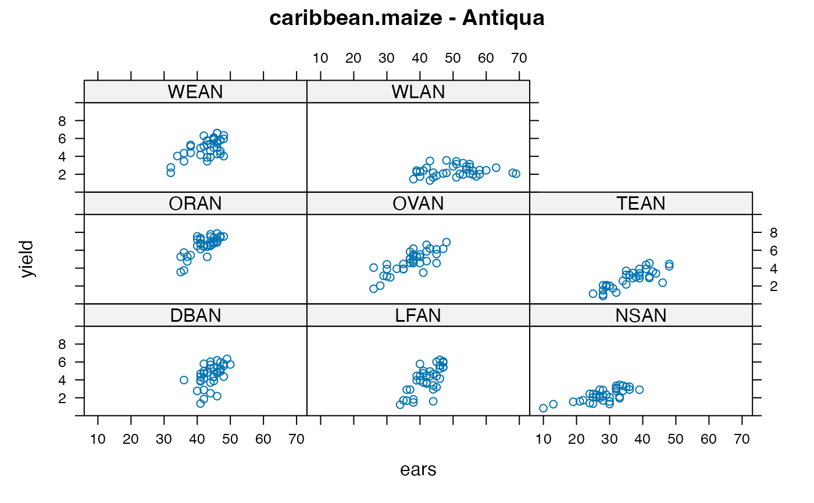
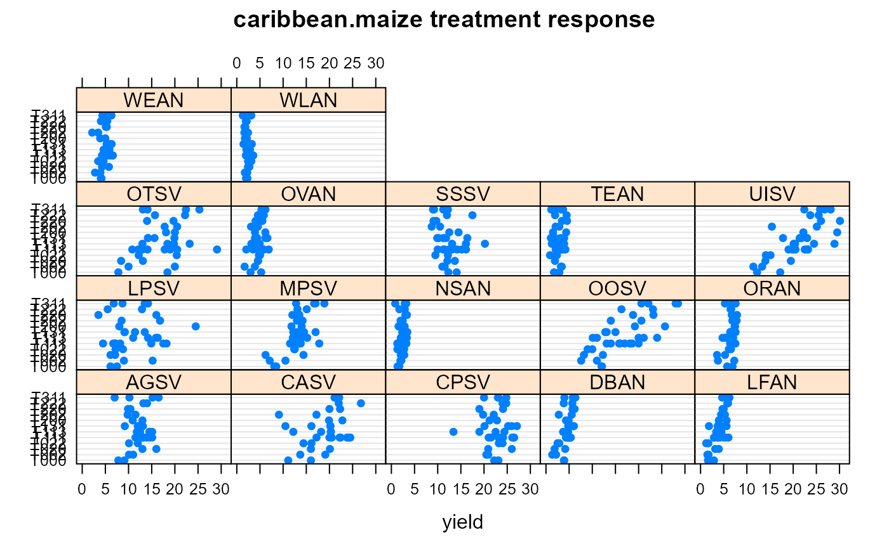
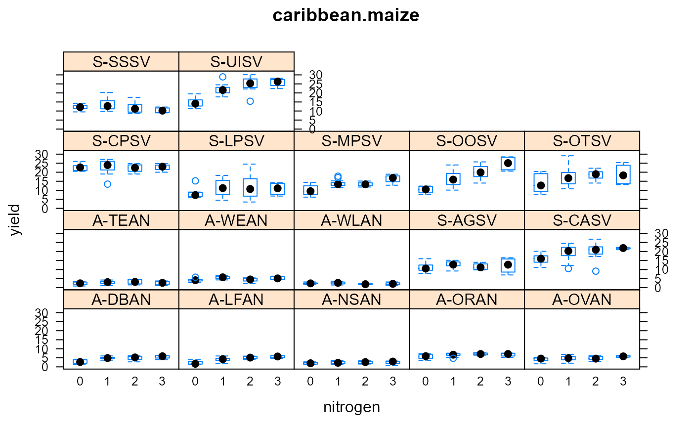

caribbean.maize.RdMaize fertilization trial on Antigua and St. Vincent.
A data frame with 612 observations on the following 7 variables.
isleisland, 2 levels
sitesite
blockblock
plotplot, numeric
trttreatment factor
earsnumber of ears harvested
yieldyield in kilograms
Antigua is a coral island in the Caribbean with sufficient level land for experiments and a semi-arid climate, while St. Vincent is volcanic and level areas are uncommon, but the rainfall can be seasonally heavy.
Plots were 16 feet by 18 feet. A central area 12 feet by 12 feet was harvested and recorded.
The number of ears harvested was only recorded on the isle of Antigua.
The digits of the treatment represent the levels of nitrogen, phosphorus, and potassium fertilizer, respectively.
The TEAN site suffered damage from goats on plot 27, 35 and 36. The LFAN site suffered damage from cattle on one boundary--plots 9, 18, 27, 36.
D.F. Andrews and A.M. Herzberg. 1985. Data: A Collection of Problems from Many Fields for the Student and Research Worker.
Retrieved from http://lib.stat.cmu.edu/datasets/Andrews/
Also in the DAAG package as data sets antigua, stVincent.
library(agridat) data(caribbean.maize) dat <- caribbean.maize # Yield and ears are correlated libs(lattice) xyplot(yield~ears|site, dat, ylim=c(0,10), subset=isle=="Antigua", main="caribbean.maize - Antiqua")# Some locs show large response to nitrogen (as expected), e.g. UISV, OOSV dotplot(trt~yield|site, data=dat, main="caribbean.maize treatment response")# The pattern is a bit hard to see, so we split the treatment factor # into separate factors, and group sites by island dat <- transform(dat, N=factor(substring(trt,2,2)), P=factor(substring(trt,3,3)), K=factor(substring(trt,4,4))) dat <- transform(dat, env=paste(substring(isle,1,1),site,sep="-")) # Now we can see the strong N*site interaction bwplot(yield~N|env, dat, main="caribbean.maize", xlab="nitrogen")